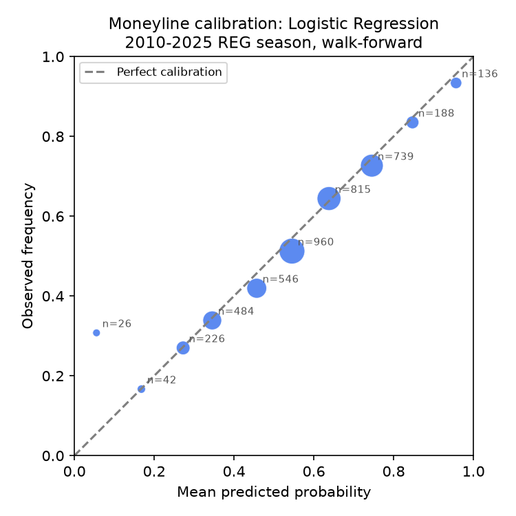
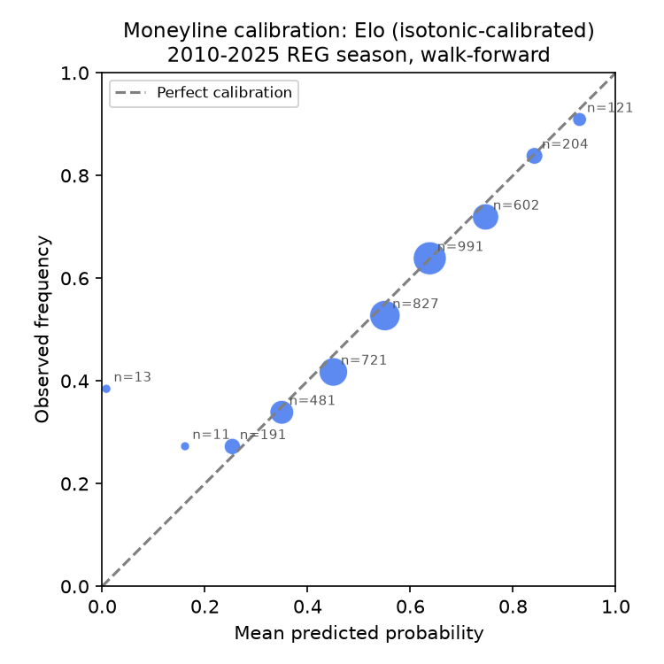
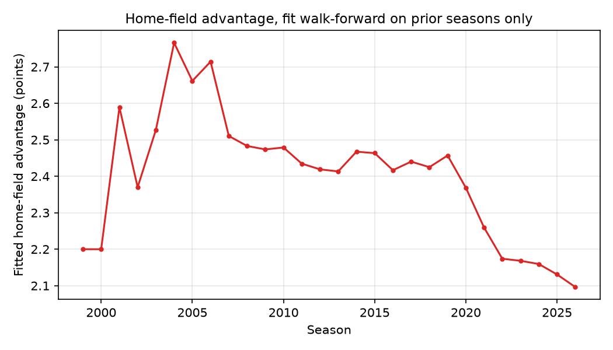

Honestly-backtested moneyline / spread / total predictions, benchmarked against the closing line.
Full slate predicted pre-kickoff at 2026-09-13T13:34:01.842488+00:00 (site rebuilt 2026-09-14 17:31 UTC). Games already played show their final score and whether each pick hit -- predictions themselves are never changed after the fact.
| # | Game | Market | Pick | Model prob. | Market prob. | Edge |
|---|---|---|---|---|---|---|
| 1 | ARI @ LAC | ML | LAC | 80.3% | 80.4% | -0.1pp |
| 2 | CLE @ JAX | ML | JAX | 78.6% | 78.7% | -0.1pp |
| 3 | NO @ DET | ML | DET | 73.1% | 73.4% | -0.3pp |
| 4 | ATL @ PIT | ML | PIT | 70.4% | 71.0% | -0.5pp |
| Combined (4 legs) | Probability | Fair odds (implied, not a real book price) |
|---|---|---|
| Model | 32.5% | +208 |
| Market-implied | 32.9% | +204 |
One leg per game only (highest-probability market for that game), drawn only across different games -- same-game legs (e.g. a team's moneyline and its own spread) aren't independent enough for the combined-probability math to mean anything, so they're never combined here.
| Game | Player | Market | Line | Model proj. | Pick | Prob. | Edge | Books |
|---|---|---|---|---|---|---|---|---|
| DEN @ KC | Marvin Mims Jr. | Receptions | 1.5 | 3.4 | OVER | 82.1% | +40.0pp | 3 |
| DEN @ KC | J.K. Dobbins | Rush yds | 50.5 | 79.1 | OVER | 78.6% | +30.7pp | 5 |
| DEN @ KC | RJ Harvey | Rush yds | 17.5 | 44.1 | OVER | 77.0% | +26.3pp | 4 |
| DEN @ KC | Rashee Rice | Rec yds | 53.5 | 71.4 | OVER | 72.9% | +24.8pp | 5 |
| DEN @ KC | Marvin Mims Jr. | Rec yds | 11.5 | 30.4 | OVER | 74.0% | +24.4pp | 3 |
| DEN @ KC | Rashee Rice | Receptions | 5.5 | 6.6 | OVER | 71.0% | +23.8pp | 4 |
| DEN @ KC | Patrick Mahomes | Pass yds | 224.5 | 268.9 | OVER | 69.2% | +22.4pp | 5 |
| DEN @ KC | Bo Nix | Pass yds | 228.0 | 272.9 | OVER | 69.4% | +22.2pp | 6 |
| DEN @ KC | RJ Harvey | Receptions | 2.5 | 3.5 | OVER | 68.8% | +21.1pp | 4 |
| DEN @ KC | Courtland Sutton | Rec yds | 42.5 | 54.8 | OVER | 66.2% | +19.0pp | 5 |
| DEN @ KC | Jaylen Waddle | Receptions | 4.5 | 3.6 | UNDER | 66.6% | -18.9pp | 4 |
| DEN @ KC | Pat Bryant | Rec yds | 24.5 | 38.2 | OVER | 68.0% | +17.9pp | 5 |
| DEN @ KC | Pat Bryant | Receptions | 2.5 | 3.2 | OVER | 64.4% | +17.6pp | 4 |
| DEN @ KC | Adam Trautman | Rec yds | 6.5 | 17.1 | OVER | 64.1% | +15.9pp | 5 |
| DEN @ KC | RJ Harvey | Rec yds | 16.5 | 28.6 | OVER | 66.0% | +15.8pp | 5 |
| DEN @ KC | Tyquan Thornton | Rec yds | 20.5 | 32.0 | OVER | 65.3% | +15.6pp | 5 |
| DEN @ KC | Courtland Sutton | Receptions | 3.5 | 4.5 | OVER | 68.8% | +14.2pp | 4 |
| DEN @ KC | Kenneth Walker III | Rush yds | 64.5 | 75.9 | OVER | 62.4% | +14.0pp | 6 |
| DEN @ KC | Adam Trautman | Receptions | 0.5 | 1.6 | OVER | 71.0% | +13.4pp | 4 |
| DEN @ KC | Noah Gray | Receptions | 1.5 | 1.6 | OVER | 52.4% | +12.1pp | 4 |
| DEN @ KC | Kenneth Walker III | Receptions | 3.5 | 2.5 | UNDER | 68.8% | -11.2pp | 4 |
| DEN @ KC | Xavier Worthy | Receptions | 3.5 | 2.6 | UNDER | 66.6% | -9.1pp | 5 |
| DEN @ KC | Kenneth Walker III | Rec yds | 19.5 | 26.4 | OVER | 59.3% | +8.9pp | 5 |
| DEN @ KC | Jaylen Waddle | Rec yds | 58.5 | 50.8 | UNDER | 60.4% | -8.9pp | 5 |
| DEN @ KC | Noah Gray | Rec yds | 10.5 | 16.4 | OVER | 57.9% | +8.3pp | 5 |
| DEN @ KC | Evan Engram | Rec yds | 22.5 | 28.4 | OVER | 57.9% | +7.6pp | 5 |
| DEN @ KC | Travis Kelce | Receptions | 4.5 | 4.4 | UNDER | 52.4% | +5.7pp | 4 |
| DEN @ KC | Xavier Worthy | Rec yds | 36.5 | 37.4 | OVER | 51.2% | +2.9pp | 6 |
| DEN @ KC | Travis Kelce | Rec yds | 41.5 | 38.9 | UNDER | 53.6% | -1.6pp | 5 |
| DEN @ KC | Evan Engram | Receptions | 2.5 | 2.6 | OVER | 52.4% | -1.6pp | 4 |
| DEN @ KC | Patrick Mahomes | Pass TDs | 1.5 | 1.4 | UNDER | 54.4% | +1.1pp | 5 |
| DEN @ KC | Tyquan Thornton | Receptions | 1.5 | 1.1 | UNDER | 57.3% | -0.2pp | 4 |
| DEN @ KC | Bo Nix | Pass TDs | 1.5 | 1.2 | UNDER | 58.8% | +0.1pp | 6 |
Sorted by |edge| -- the biggest disagreements with the market are listed first specifically so they're easy to scrutinize, not because they're the best picks.
| Model | N | Accuracy | Log loss | Brier | ECE |
|---|---|---|---|---|---|
| elo_only (raw) | 4162 | 0.6425 | 0.6321 | 0.2211 | 0.0293 |
| elo_only (isotonic-calibrated) | 4162 | 0.6430 | 0.6633 | 0.2216 | 0.0188 |
| logistic_regression (n=4162) | 4162 | 0.6470 | 0.6262 | 0.2183 | 0.0208 |
| xgboost (nested-CV tuned, n=4162) | 4162 | 0.6497 | 0.6523 | 0.2196 | 0.0210 |
| market_implied (n=4161) | 4161 | 0.6655 | 0.6094 | 0.2110 | 0.0165 |
| home_always (baseline) | 4162 | 0.5543 | 0.6877 | 0.2473 | 0.0168 |
| favorite_always (baseline, n=4161) | 4161 | 0.6657 | |||
| ensemble (logistic+market, n=4162) | 4162 | 0.6648 | 0.6093 | 0.2109 | 0.0146 |
| Market | N | Accuracy | Model MAE | Market MAE | ECE |
|---|---|---|---|---|---|
| Spread (ATS), model only | 4069 | 0.5072 | 10.33 pts | 10.08 pts | 0.0599 |
| Spread (ATS), ensemble | 4069 | 0.5139 | — | — | 0.0042 |
| Total (O/U), model only | 4134 | 0.5160 | 10.61 pts | 10.45 pts | 0.0458 |
| Total (O/U), ensemble | 4134 | 0.5104 | — | — | 0.0205 |
Baselines -- ATS: home-always 0.491, favorite-always 0.489. O/U: always-over 0.496, always-under 0.504. "Ensemble" blends the model with de-vigged market juice (spread/total odds) on the log-odds scale, weights learned walk-forward, same discipline as the moneyline ensemble.



Historical nflverse data provides closing lines only, not opening lines, so true historical CLV
(did we get a better price than where the market closed) cannot be reconstructed retroactively. What the
walk-forward backtest above measures instead is whether the model's calibrated probabilities beat the
market's closing-line-implied probabilities on log loss / Brier / accuracy -- and, as reported above,
they generally do not by a meaningful margin. Starting this week, every prediction snapshot is timestamped
pre-kickoff; as the season progresses we will append realized closing lines to results_log.csv
and publish a genuine prospective CLV chart here.